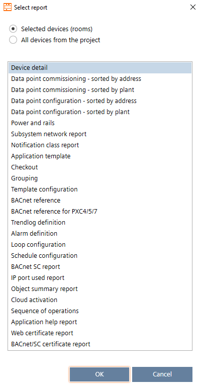

Types of reports
Reports can help you analyze your project by providing information on data points, application types, etc. You can create reports in the following tasks:
- Building > Building structure
Reports for buildings, building elements, and devices. - Building > Central functions
Only reports for hierarchy elements - Startup > Export
Creating engineering data reports
Also you can choose to include all devices of the project or the devices you selected.
- Selected devices (rooms)
Includes only the selected devices. - Include all devices from project
Includes all devices contained in the project.
The following report types are available.
Report type | Description |
|---|---|
Device detail | PXC4/5/7: A list of all system components (automation station as well as TX-I/O modules and accessories) with corresponding details such as device addresses, serial number etc. of an automation station. Room automation: A list of automation station with corresponding details such as device address, location, serial number, firmware version (if available) total number of devices per type, etc. |
Data point commissioning - sorted by address | A list of data points and the corresponding commissioning status sorted by data point addresses of an automation station. |
Data point commissioning - sorted by plant | A list of data points and the corresponding commissioning status sorted by plants of an automation station. |
Data point configuration - sorted by address | Shows details of the point configuration. The information is grouped per bus and scope of the room automation station sorted by data point addresses or by plants of an automation station. |
Data point configuration - sorted by plant | Shows details of the point configuration. The information is grouped per bus and scope of the room automation station sorted by data point addresses of an automation station. |
Power and rails | PXC4/5/7 report showing the configuration of TX-I/O modules and accessories assigned to rails of an automation station including power consumption estimations and corresponding details such plant room, panel name, device address, rail lengths etc. |
Subsytem network report | Shows subsystems network report on the following:
The report presents a sorted list of subsystem networks for Modbus (TCP and IP), M-bus, and KNX PL-Link devices. If Modbus or M-bus Gateways or level converters are employed, the report also covers their relevant information. |
Shows the details of the notification class entries, such as recipient list. | |
Grouping | A summary of the central functions containing group members, group numbers, automation stations, etc. |
BACnet reference for PXC4/5/7 | Shows a list of BACnet references including reference source used per PXC4/5/7automation station. |
Trendlog definition | Shows an overview of all trend log objects for each device. The report contains the most important configuration properties of the trend log objects. |
Alarm definition | Shows an overview of all alarm objects and event enrollment objects for each device. The report contains the most important configuration properties of the alarm objects and event enrollment objects. |
Loop configuration | Provides details of loop (controller) object configuration defined in a customer project, also shows output, input and set data point references. |
Schedule configuration | Provides details of all schedulers along with scheduled objects with time period and switching values. |
BACnet/SC report | Shows a list of BACnet/SC hubs and nodes and relevant BACnet/IP information. |
IP port used report | Shows used and unused IP ports for each device of the report. The report is available for PXC4/5/7 devices. |
Object summary report | Shows the calculation of the Desigo CC License Points (per device). |
Cloud activation | Shows an overview of all cloud capable devices and their activation keys so the user can manually register the devices to the cloud. |
Web certificate report | Shows a list of web certificates and relevant information on the certificate type, duration and other important information. |
BACnet/SC certificate report | Shows a list of BACnet/SC certificates and relevant information on the certificate type, duration and other important information. |
Application template1 | Shows a list of automation stations and the used application templates for template-based devices of the project. |
Checkout1 | Shows device, checkout and parameter information. The checkout information is typically filled in by the user. |
Template configuration1 | Name and type information of the used application template, including a summary of the selected configuration choices for template-based devices of the project. |
BACnet reference1 | Shows a list of BACnet references used in the project for room automation stations or application template-based devices. |
Sequence of operations1 | Provides a visualization of the sequence of operation for configurable applications. Helps the user to understand what kind of application is currently loaded on the device. |
Application help report | Name and type information of the used application template, including a summary of the selected configuration choices for template-based devices of the project. |
1 – These reports are only available if All devices from the project is selected. | |

The availability of reports depend on the device type (e.g. DXR1/2, PXC3, PXG3 or PXC4/5/7 etc). Balancing reports are available in Startup > Global functions/Export, and in the web interface of the device.
Creating a report
- Select at least one building, building element, device or hierarchy element.
- Right-click the selected elements and select Reports.
- The Select report dialog box opens.

- Choose to include all devices of the project or the devices you selected.
- Select the report type you want to create.
- Click OK.
- The selected report is generated and opens in the Reports component.